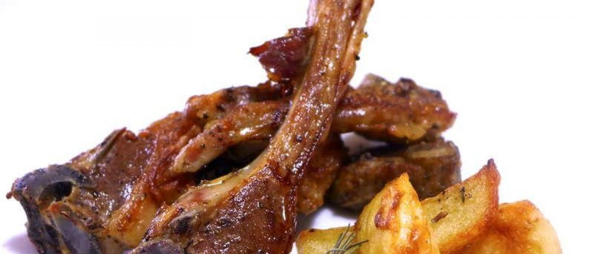

Mbuzi Choma

Description
Mbuzi choma is a Swahili term that translates to grilled goat in English.
It refers to a popular East African dish where goat meat is marinated
with various spices and then grilled over an open flame until tender and
flavorful
The processof preparing mbuzi choma typically involves cleaning and seasoning
the goat meat with a blend of spices such as salt, black pepper, garlic,
cumin, and coriander. The meat is the left to marinate for some time to
allow the flavors to infuse
Once marinated, the goat meat is skewered and grilled over charcoal or an
open flame until it is cooked to perfection. The grilling process gives the
meat a smoky flavor and a charred exterior while keeping it juicy and tender
on the inside
Ingredients
- 2-3 Kgs of goat meat, preferably from the leg or ribs, cut into chunks
- 3-4 cloves of garlic, minced
- 1-2 inches of fresh ginger, minced
- 1-2 lemons or limes, juiced
- 2-3 tablespoons of vegitable or olive oil
- 1-2 tablespoons of soy sauce (optional)
- 1 teaspoon of ground black pepper
- 1 teaspoon of ground cumin
- 1 teaspoon of paprika
- Salt to taste
Preparation Steps
- Clean the goat meat thoroughly and pat it dry with paper towels
- Cut the meat into manageable chunks
- Combine the minced garlic, minced ginger, lemon juice, vegetable oil,
soy sauce, ground black pepper, ground cumin, paprika and salt in
a large bowl
- Mix the marinade well to ensure all ingredients are evenely combined
- Add the goat meat chunks into the bowl and massage the marinade
into the meat, ensuring all pieces are well coated
- Cover the bowl with palstic wrap and let the meat marinate in
the refrigerator for atleast 2 hours, but preferably overnight for
the best flavour
- Preheat your grill to medium-high heat
- If using charcoal, ensure the coals are hot and have a light coating
of ash
- Place the marinated goat meat on the grill, spacing the pieces out
to ensure even cooking
- Grill the meat for about 15-20 minutes per side, or until the meat
is well browned and cooked through, turning occassionary to prevent
burning
- Once cooked, remove the meat from the grill and let it rest for a few
minutes
- Serve the mbuzi choma hot, traditionally with kachumbari